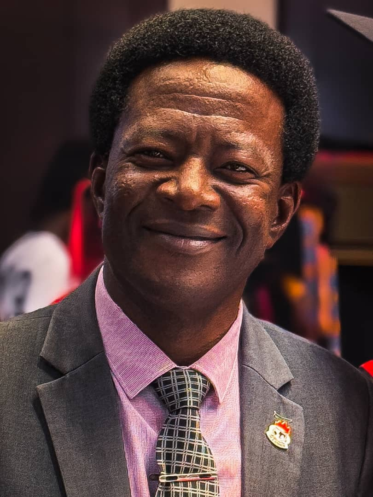

Our Team
A passionate team hoping to build a better tomorrow
Meet The Founder

Pst. Prosper Paul Eshun is the CEO of GRL, Founder of Gloryland Realty Foundation (GRF), Philantropist and a Pastor in Winner’s Chapel International / Living Faith Church Worldwide, under the auspices of Bishop David O. Oyedepo.
He joined Living Faith Church Worldwide (aka Winner’s Chapel International) in September 1998, was ordained on 20th April 2011, and has remained with them for the past twenty-eight years, serving as a Pastor for the past sixteen years and still counting.
He has planted many churches in the commission and now serves under the Kasoa District Church in the Central Region of Ghana as Resident Pastor / Pastor-in-charge of one of the branches.He is married with three children and a lovely wife - the bone of his bone.
Meet The Board
(Executive Director / Finance M&E / Enterprise)

(Executive Secretary)

(Executive Director / Production Supervisor)
(Accountant)
(Executive Director of Operations)